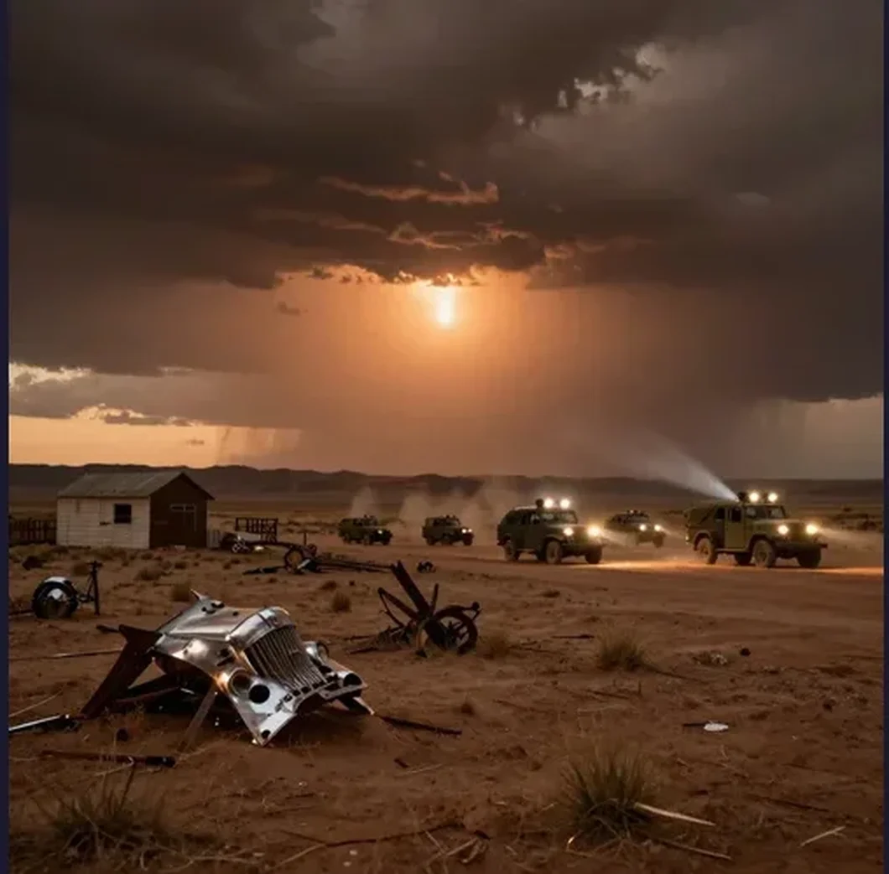

Roswell UFO Incident: The 1947 Crash That Launched a Thousand Conspiracy Theories

It was July 8, 1947, in New Mexico. The Roswell Army Air Field sent out a press release. Its words would echo through American life for decades.
The headline was shocking: “RAAF Captures Flying Saucer on Ranch in Roswell Region.” The Associated Press picked up the story and it spread across the country. The military said it had found a “flying disc” on a ranch near Roswell.
For a few dizzying hours, it seemed that humans might finally have proof that we are not alone in the universe. Then the story changed fast.
The next day, the military took it back. The “flying disc,” it said, was only a weather balloon. The debris was made of rubber, tin foil, balsa wood sticks, and heavy paper. These were plain materials carried by an ordinary weather device. The story faded from the front pages. For thirty years, almost nobody thought about Roswell.
But Roswell would not stay buried. In the late 1970s, a nuclear physicist named Stanton Friedman began to interview elderly witnesses. They told a very different story. It had no weather balloon. It had a crashed spaceship, strange metals from another world, and alien bodies.
The revival of the Roswell story started the modern UFO conspiracy movement. It turned a sleepy New Mexico town into a place of pop-culture pilgrimage. And it created one of the longest-lasting mysteries of the twentieth century.
To understand Roswell, you must understand the time. The summer of 1947 was the birth of the flying saucer age.
On June 24, 1947, a private pilot named Kenneth Arnold was flying over the Cascade Mountains in Washington State. He saw nine crescent-shaped objects flying in a group. He guessed their speed at 1,900 km/h, far faster than any aircraft of the time.
Arnold said they moved “like a saucer would if you skipped it over water.” The newspapers loved the phrase. They coined the term “flying saucer.” Within weeks, hundreds of UFO sightings were reported across the United States. The country was gripped by saucer fever.
In this mood, W.W. “Mac” Brazel found strange debris in early July 1947. He was a foreman at the Foster Ranch, about 75 miles northwest of Roswell. The pieces were scattered across a pasture.
Brazel later described rubber strips, tin foil, heavy paper, balsa wood sticks, and a kind of tape with flower designs. He gathered the materials and kept them in a shed. Eventually he told the local sheriff.
The sheriff contacted the Roswell Army Air Field, or RAAF. It was home to the world’s only nuclear-armed bomber wing, the 509th Bomb Group.
On July 8, Major Jesse Marcel Sr., the 509th’s intelligence officer, was sent to the ranch. He collected debris and took some back to the base. On the way, he stopped at his home to show his wife and son the strange materials.
That same day, RAAF public information officer Walter Haut issued the famous press release. Within 24 hours, the military changed course. Brigadier General Roger Ramey held a press conference at Fort Worth Army Air Field in Texas.
He showed debris that he said came from a rawinsonde weather balloon. A rawinsonde is an instrument carried by a balloon to measure the weather. The debris also included a radar reflector kite. The story was declared a mistake, and the press moved on.
For decades, people accepted the “weather balloon” answer, if grudgingly. Then, in the early 1990s, Congress and the public pushed the United States Air Force to hold a formal investigation.
The result was a 1994 report called “The Roswell Report: Fact vs. Fiction in the New Mexico Desert.” It said that the 1947 debris came not from a weather balloon but from a highly secret military program called Project Mogul.
Project Mogul was a top-secret Cold War program. Its aim was to detect Soviet nuclear weapons tests. It used chains of high-altitude balloons with low-frequency microphones. The microphones were meant to pick up sound waves from nuclear explosions. These waves can travel huge distances through the air.
The Mogul balloon chains were made of neoprene rubber, aluminum foil reflectors, balsa wood frames, and other materials. They matched almost exactly the debris that Mac Brazel described and that was photographed in General Ramey’s office.
The key was secrecy. Project Mogul was so secret that in 1947 the military could not admit it existed. The “weather balloon” story was not exactly true. But it was the nearest description that was not secret.
The Air Force report said that Brazel had found pieces of a Mogul balloon chain, called Flight 4. It had been launched from Alamogordo, New Mexico, in early June 1947 and never recovered.
The “alien bodies” part of the story did not appear until decades after the event. It came mostly from Glenn Dennis, a former funeral worker in Roswell. In the late 1980s, he said that in July 1947 the RAAF base had called him. They asked about small, tightly sealed coffins. He said he had seen small, strange bodies in the base hospital.
In 1997, the Air Force published a second report, “The Roswell Report: Case Closed.” It said that the witnesses who described small, human-like bodies were probably recalling events of the 1950s. In those years, the Air Force ran high-altitude parachute tests with crash test dummies shaped like people.
The dummies were about the size of adults. But they could seem smaller when people described them from memory decades later. They were dropped from balloons high in the sky. Military workers recovered them in the desert.
Those workers wore field uniforms. Witnesses may later have remembered the uniforms as “medical” or “decontamination” suits.
Jesse Marcel Sr. did not speak in public about Roswell for more than three decades. But in 1978, nuclear physicist Stanton Friedman interviewed him. Later Marcel appeared in a 1979 documentary.
Marcel said that the debris he gathered was “not of this world.” He said the material shown in General Ramey’s office was not the same as what he took from the Foster Ranch. He described a metal foil that could be crumpled and would spring back to its first shape. He also described small beams with strange marks like hieroglyphics.
Marcel was a trusted military intelligence officer with a fine record. His words became the base of the Roswell conspiracy theory.
Critics say that Marcel told different stories over the years. They add that psychologists have shown how memory changes over three decades. Supporters reply that a man with Marcel’s training and experience would not mistake balsa wood and aluminum foil for something extraordinary.
For thirty years, Roswell was a non-story. That changed in 1978, when Stanton Friedman tracked down Jesse Marcel Sr. and did a series of interviews. Friedman’s work led to a book, “The Roswell Incident,” in 1980. Charles Berlitz and William Moore were its authors.
The book was a bestseller. It showed the whole Roswell story to a mass audience. It had a crashed spaceship, alien bodies, a government cover-up, and threats against witnesses.
Over the next decades, dozens of witnesses came forward with more and more dramatic claims. Some said they saw alien spaceships. Others described several crash sites. Others said live aliens had been taken to Wright-Patterson Air Force Base in Ohio.
The result was a myth that fed itself. Each new witness, book, or film added another layer. It became harder and harder to separate the layers from the first simple facts.
The International UFO Museum and Research Center opened in Roswell in 1991. It has become one of the most popular tourist sights in New Mexico. It draws over 200,000 visitors a year to a town of about 50,000 people.
Roswell has fully taken on its alien identity. Streetlights are shaped like alien heads. The local McDonald’s is built like a flying saucer. A UFO Festival each July draws thousands of visitors from around the world. A brief military press release has become the economic identity of a whole town.
Roswell is not a single mystery. It is a palimpsest. That is an old page written over again and again, with older writing still showing underneath. Here the layers are memory, testimony, guesses, and myth. They sit on top of a brief event in July 1947. A rancher found some debris, and a military base issued a confused press release.
Project Mogul explains the physical evidence very well. The materials match. The dates fit. And the secrecy of the program explains why the military acted so strangely.
But the government has been dishonest about other matters. This has created a deep well of distrust that no official report can fully drain.
The idea of aliens requires a lot of belief. It says a crashed spaceship was recovered and alien bodies were hidden. It says the truth has been kept secret by thousands of people in many government agencies for many decades. That is an extraordinary claim, and it needs extraordinary evidence.
So far the evidence is the stories of elderly witnesses, accounts passed around, and documents that may not be real. And yet the story lives on. It speaks to something deeper than evidence. It is the hope, or the fear, that we are not alone.
References & Further Reading
Britannica: Roswell Incident — Summary of the crash, military response, and cultural impact
U.S. Air Force: The Roswell Report — Official military report on the 1947 incident
Wikipedia: Kenneth Arnold — The pilot whose 1947 sighting launched the “flying saucer” era
Wikipedia: Stanton T. Friedman — The nuclear physicist who revived the Roswell story in 1978
📚 Recommended Reading: IN LEAGUE WITH A UFO: THE ROSWELL INCIDENT by Lou Baldin (on Amazon) — As an Amazon Associate, we earn from qualifying purchases.
Editorial note: reconstructions are continuously revised as new witness testimony and declassified documents emerge. See our Editorial Policy.